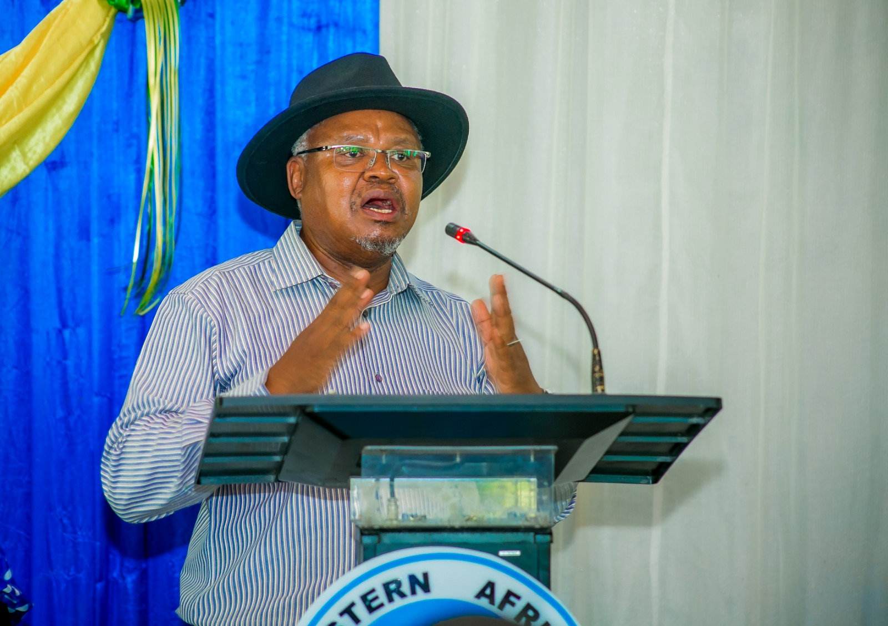
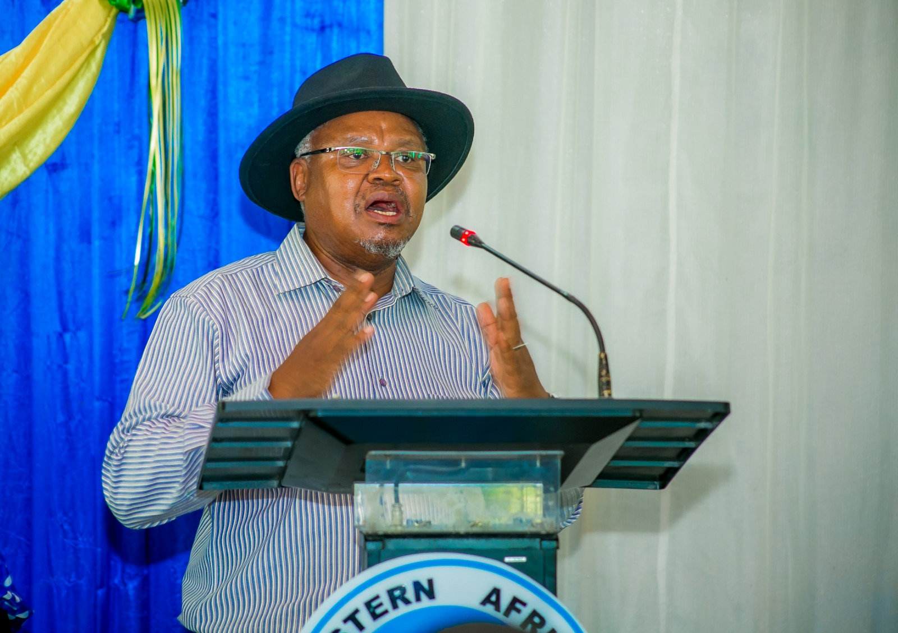

welcomes you to the general meeting of convocation join us for a celebration of achievement and excellence
THEME;
Modernizing data ecosystems to accelerate the implimentation of African continental free trade area
(AfCFTA):
the role of official statistics and big data in the economic transiformation and sustainable
development of Africa.
PLACE; EASTC Campus-changanyiken(DSM)
VENUE; Function Hall
DATE; 08 NOVEMBER 2024
This year's convocation aims to understand the African Continental Free Trade Area (AfCFTA) and potential role statistics and big data plays in discovering markets and serving customers across Africa
This year's topic,"The role of official statistics and big data in the economic transformation and sustainable development of Tanzania"
The activities during the program
REGISTRATION AND PRESENTING PROGRAM
INTRODUCTION
The introduction and welcoming remarks is done by the president of convocation
Ms. NYAMBILILA MINGA
OPENING THE CONVOCATION
The opening remarks,preamble to award presentation and constituting the convocation
CHAIRPERSON: DR TUMAINI KATUNZI


SPEAKERS
 

THE REACTOR'S PRIZES
The guest of honour gives awards to the best students who attained distinctions from the senate
and for those with highest GPA and also to the EASTCSO leaders


 home
home contact us
contact us